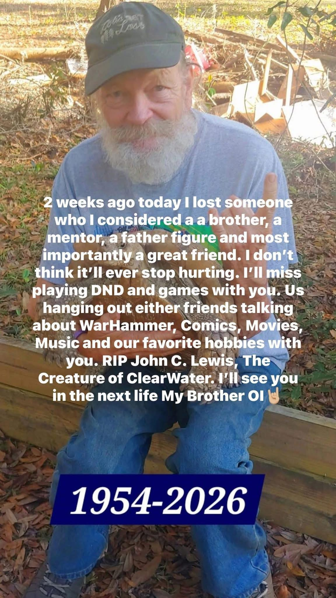

Remembering John and my last days with him
Why I’m Writing This Tribute to a Friend

Sunday March 1st 2026
I visited my friend John C. Lewis at the hospital for what I feared might be the last time. Walking into that room was one of the hardest things I have ever done. He was unconscious and hooked up to a ventilator, surrounded by the constant sounds of hospital machines breathing and monitoring him while the room itself felt unbearably quiet. Seeing someone who had once been so full of life, humor, passion, and energy lying there motionless felt unreal. A nurse explained to me what had happened. John had been found unconscious at the rehabilitation center by his daughter and grandson. They attempted to resuscitate him there, and during the ambulance ride to the hospital he suffered a cardiac arrest. Hearing those details made the reality of the situation hit even harder. Up until that moment, part of me still hoped things would somehow turn around. John had always felt larger than life to me — the kind of person who seemed impossible to imagine gone. He was someone who filled every room with stories, laughter, wisdom, and conversation. He had a way of making even ordinary moments memorable because of how passionate he was about the things he loved and the people around him. Seeing him silent was something I still struggle to process.

Not long after I arrived, our mutual friend Mike came to the hospital as well. The moment we saw each other, we hugged and cried together. Neither of us really needed to say much; the pain was already understood. Mike quoted The Lord of the Rings as he said goodbye to John, which felt fitting because stories of friendship, courage, and enduring through darkness were such a huge part of John’s life. Tolkien, Dungeons & Dragons, mythology, comics, fantasy, and storytelling were not just hobbies to him — they were part of who he was. They shaped the way he viewed the world and the way he connected with people.
I stayed with John until visiting hours were over. Standing beside his bed, I cried harder than I have in a very long time. I apologized to him for every moment I ever felt I could have been a better friend. I told him I wished I could have done more for him during his struggles and in his final moments. Looking back now, I know grief makes you replay everything in your head wondering if you could have visited more, called more, said more, or somehow changed the outcome. Even though I spent years by his side, grief still makes it feel like it was not enough.
Before I left, I quoted one of John’s favorite lines connected to Thor, one of his favorite Thor heroes from Marvel Comics: “Whosoever holds this hammer, if he be worthy, shall possess the power of Thor.” I told him that if anyone was worthy of wielding Thor's Hammer it was him. I hoped we would meet again someday. It was the only goodbye I could manage at the time.

Monday March 2nd 2026
The following day, I went to the farm where John lived with his childhood friend Phil. Walking onto the property felt surreal because I had spent so much time there over the years. The farm carried John’s spirit everywhere you looked. Every part of it held memories — the places where he would stand talking for hours, where we played Dungeons & Dragons together, and where we sat discussing comics, movies, mythology, philosophy, life, and everything in between. Phil gave me permission to go through John’s gaming office and take whatever items I wanted to keep. Walking into that room felt like stepping directly into John’s mind and personality. Shelves were packed with decades of passion and creativity: Dungeons & Dragons books, Warhammer 40k miniatures and artwork, Godzilla collectibles, The Lord of the Rings memorabilia, comics, dice, gaming supplies, and years of accumulated memories tied to the stories and hobbies that brought all of us together. What made the moment even more emotional was remembering that John had already talked about where he wanted certain collections to go. According to his wishes, he wanted Ken to have his Warhammer 40k collection, Hassan to have his Godzilla collection, Michael to have his Lord of the Rings collection, and me to have his Dungeons & Dragons collection. Carrying out those wishes felt important to me. It felt like preserving pieces of John and making sure the things he loved ended up with the friends who would truly appreciate them. Out of everything in the room, I chose the items that carried the strongest emotional connection for me: his castle wall DM screen, his dice, and the journals we used during our D&D games together. Those were not just gaming items to me. They were artifacts of years of friendship, laughter, storytelling, creativity, and long conversations. Every scratch, folded page, and worn edge carried memories attached to it. After gathering those items, I made one final walk around the farm. I visited the animals John loved so deeply — his dogs, cats, chickens, and especially his turtles. John adored those turtles. Some of them had lived for decades, with the oldest being over 50 years old, older than I am. There was something poetic about them: patient, ancient creatures he cared for throughout his life. You could see how much love and dedication he poured into them. As I walked around the property, I took pictures and recorded videos of the places that mattered most. I filmed the spots where we played D&D together and where we would spend entire afternoons talking about campaigns, characters, comics, mythology, games, and life itself. The nostalgia hit me all at once while recording those videos. I cried through much of it because every corner of that farm carried memories. For almost three years, I visited John once a week — usually on Tuesdays, Thursdays, or Saturdays — and I would spend nearly the entire day with him. Those visits became part of my life and routine. Seeing him, talking with him, playing games, hearing his stories, and simply spending time together became something constant and meaningful to me. John was more than just a friend. He became my mentor, my brother, and a father figure to me. That is why leaving the farm for the last time hurt as much as it did. During the drive home, the weight of everything finally crashed down on me harder than I expected. I had to pull over on the side of the road just to cry until I could safely continue driving. Even after calming down enough to get back on the road, I still felt hollow and emotionally drained.
Tuesday March 3rd 2026:
Today, I planned to visit John one final time at the hospital. I wanted to tell him about my trip to the farm. I wanted him to know that I gathered the things that mattered most, that I had walked the property one last time, and that I had said goodbye to the animals he loved. I wanted to reassure him that his memories, stories, gaming treasures, and belongings would be preserved and shared with the people who cared about him. Unfortunately, things did not go the way I hoped. When I arrived at the hospital, his daughter was there and told me, “I don’t want you here.” I simply responded with “okay” and left. I understood she was grieving the loss of her father, but her words still hurt deeply. I felt angry, hurt, disappointed, and devastated in that moment. I was not there to cause problems — I only wanted to say goodbye to someone who had become one of the most important people in my life. After leaving the hospital, I drove to John’s favorite comic book store, Yancy Street Comics. John had been friends with Chad, the owner, for over a decade. I gave Chad an update on everything that had happened, and we spent time talking about John and the many good memories connected to him. We talked about how John would not want people drowning in sadness forever. He lived to 71 years old and lived life exactly the way he wanted — surrounded by the hobbies, stories, games, friends, and animals he loved. He built a life full of imagination, friendship, creativity, and passion, and he shared those things freely with the people around him. That conversation helped make the drive home a little easier than the day before, though the grief is still there and probably will be for a very long time. I know I am going to miss him deeply. John was more than just a friend to me. He was my brother, my mentor, and a father figure. He welcomed me into his world, shared his passions with me, and gave me years of memories that I will carry for the rest of my life. The games we played, the stories we shared, the conversations we had, and the time we spent together meant more to me than I can fully put into words. He taught me about friendship, creativity, storytelling, loyalty, and what it means to truly care about the people around you. Some of my happiest memories involve sitting at that farm for hours talking about Dungeons & Dragons, Warhammer 40k, Godzilla, comics, fantasy, sci-fi, dating, politics, mythology, religion and life itself. Those memories will stay with me forever. I love you, John. Thank you for everything you gave me — your friendship, your wisdom, your humor, your stories, your kindness, and your time. Thank you for welcoming me into your life and treating me like family. This is not goodbye. Until the next time we see each other, my friend. As you always said whenever we hung up the phone — OI!

Categories: COMIC BOOKS, Collecting
Tags: #ComicsCulture #TreasureHunting #VeteranWisdom